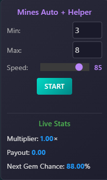
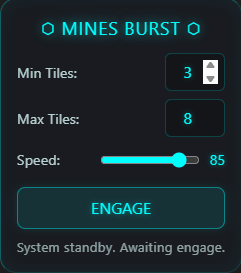

Mines Auto
Auto-plays Mines on Stake and Nuts — random picks, adjustable speed, and exact next-gem odds right in the panel.
Two flavors of the same core engine, themed per site. Stake runs Mines Auto + Helper; Nuts runs Mines Burst (Hologlass theme). Same behavior, different vibe.
Set Min Tiles and Max Tiles and the script will randomly pick somewhere in that range every round, auto-cash out, and fire the next bet. The Speed slider controls how fast it goes — dial it low for a calm grind, crank it to 85+ for rapid-fire burst mode.
Live stats right in the panel: current Multiplier, Payout, and Next Gem Chance — the exact probability of the next tile being a gem, computed from how many mines and how many tiles are left on the board. Use it to calibrate your cash-out target before you start.
Set your mine count and bet in the game as normal, set Min/Max + Speed in the panel, and hit Start (or Engage on Nuts). Draggable panel, tuck it wherever it fits best.
Screenshots


Install
Stake — Desktop
Auto-plays Stake Mines with random picks, adjustable speed, live stats.
Download for DesktopStake — Mobile
Mobile Stake Mines auto-player with touch-friendly controls and live stats.
Install for MobileNuts — Desktop
Auto-plays Nuts Mines with rapid picks, auto-cashout, adjustable speed.
Download for Desktop